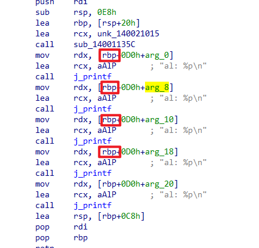
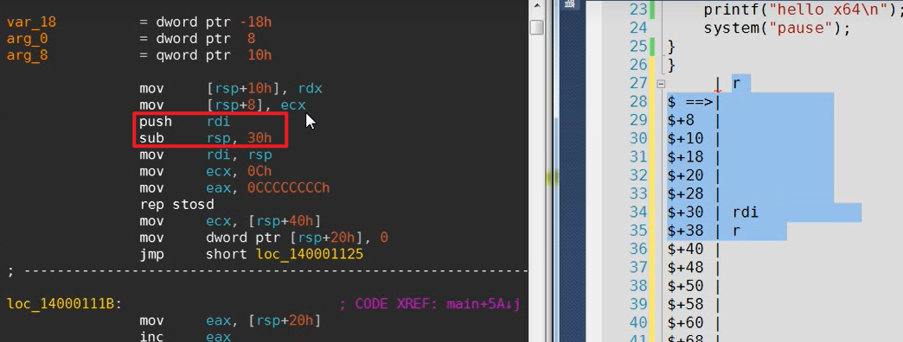
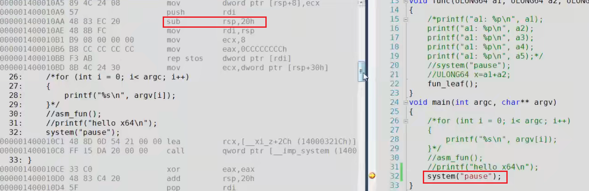
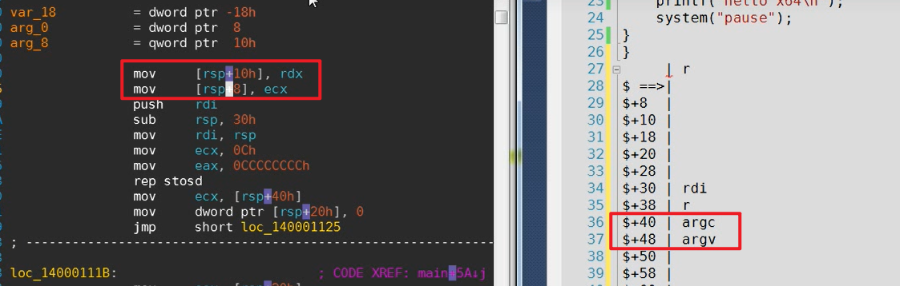
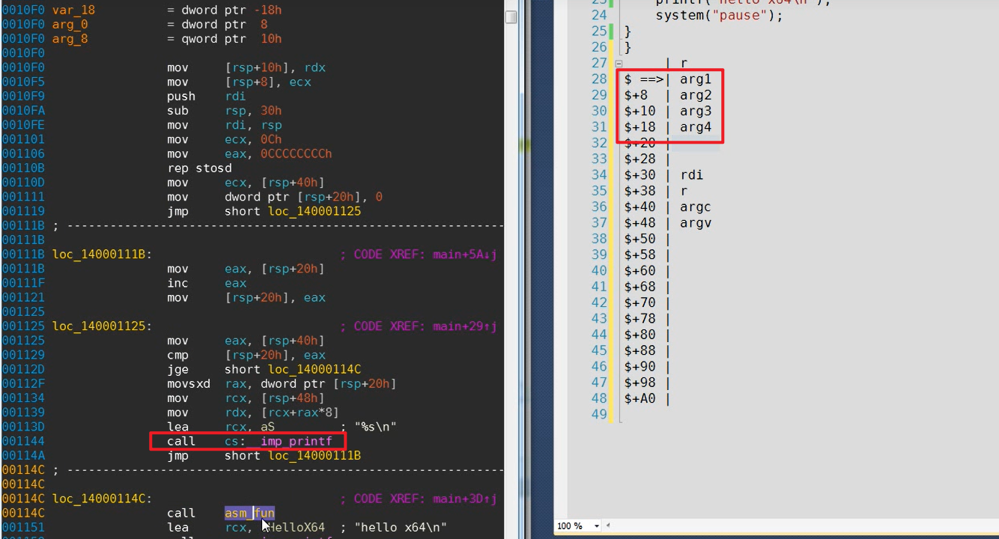
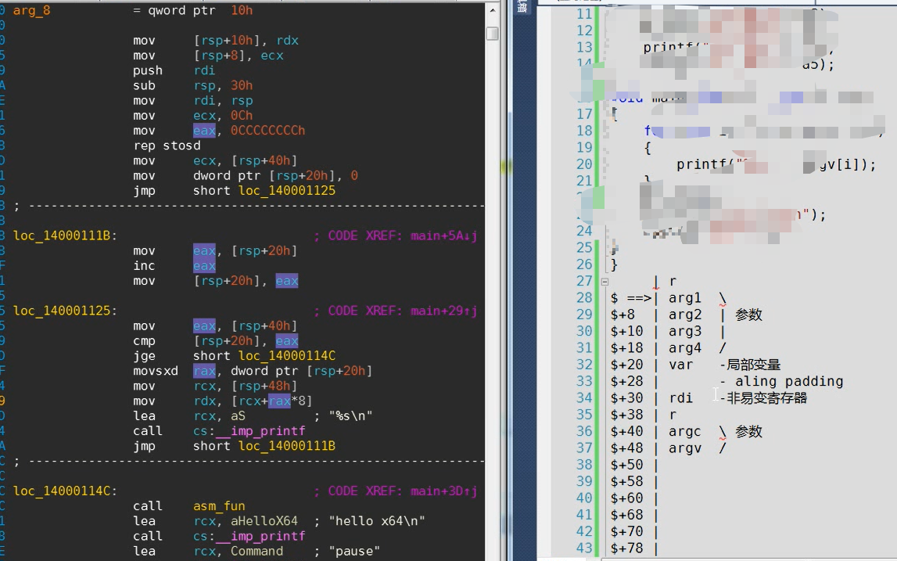
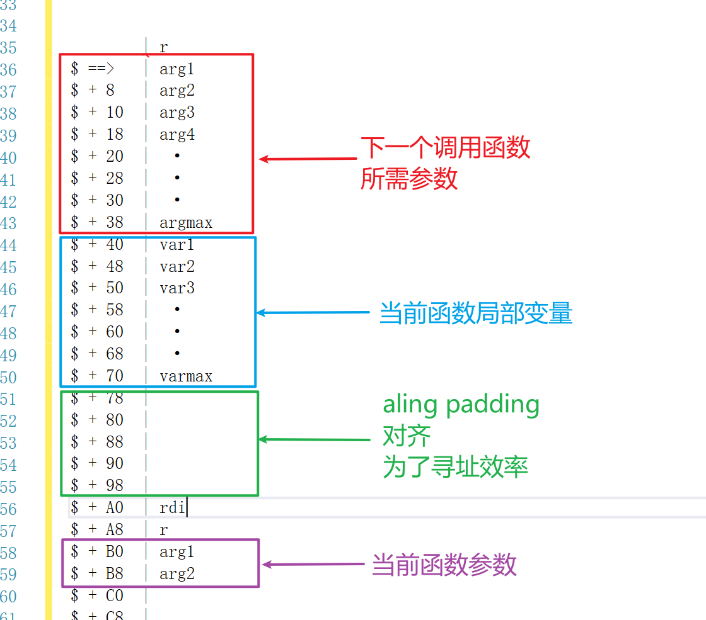
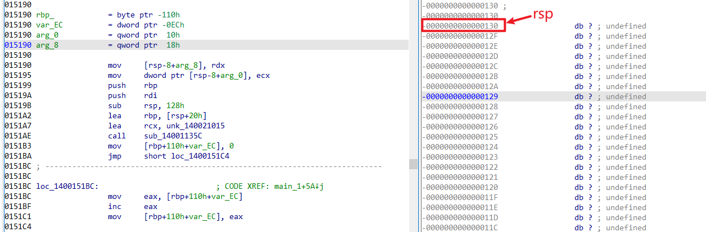
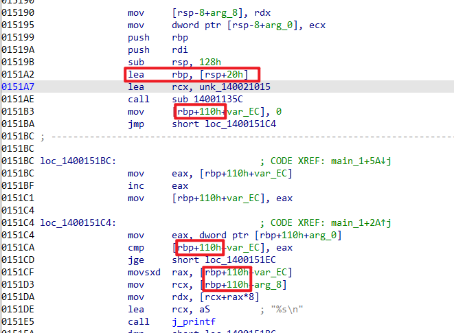
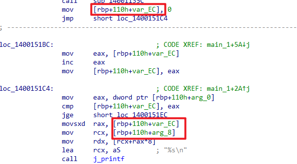

主要讲述 arm64 中的栈帧分析
不知道是编译器的原因还是什么其他原因，按照常理来说 x64 应该使用 rsp 寻址，但是为什么我的用的全是 rbp 寻址😐
栈帧
什么是栈帧？？？
在 32 位中，进入函数之后一般会有一个 push rbp 的操作，在两个 rbp 之间的这个区段就叫做栈帧。所有的东西都是那 rbp 来进行偏移寻址
64位和32位异曲同工，虽然不再使用 rbp 但是依旧可以进行栈帧定义。
在64位中，栈上存放着函数的返回地址，那我们将栈帧定义成：在栈上保存的两个函数返回地址之间的区段就叫做栈帧。
利用栈帧分析程序
这里利用栈帧分析局部变量和参数，可能是编译器的原因吧，我的 x64 用的都是 rbp 寻址

没什么办法了，那就只能按照视频里面的例子来了
先看一下大致的程序
栈帧空间规划
在刚进入一个函数的时候 rsp 所指向的地方是栈中储存调用函数的返回地址的地方，在栈帧上我们将它标记为 r。
随后进行了 push rdi 和 sub rsp，30h 的操作，此时栈帧的结构如下，箭头表示 rsp 当前所在的位置，蓝色阴影区域就是当前函数的栈帧

非叶函数的栈空间分配
非叶函数：在函数实现过程中有调用其他函数的函数就是非叶函数
叶函数：在函数的实现过程中不再调用其他函数，自己实现函数的功能。其他函数包括系统里面的自带的 API
在 x64 中，非叶函数至少分配 4 个参数的栈空间
在下图中，尽管在 main 函数中只调用了一个只有一个参数的 system( ) 函数，但是依旧为它分配了 4 个参数的栈空间

变量类型判断
不知道自己的描述是不是准确，这里类型的判断是指：判断该变量是函数参数还是局部变量
在对 rsp 进行 sub 操作之前，进行了参数入栈操作，这里的参数是该函数所需的参数，对于本例来说就是 argc 和 argv

在对栈帧的大致结构做了规划之后，接下来我们要找到 call ，并且观察所 call 的函数所需的参数。
因为 x64 是一次性分配栈空间的，所以我们需要找出该函数中所有 call 中所需参数最多的那个，并且分配栈空间

这个例子比较简单，print 函数是不定长参数，所以必须分配4字节的空间，所以参数空间就是 rsp 当前所指向的位置向下划分 4 个字节的空间。
位于红色框区域内的就是参数，否则就是局部变量。
栈帧空间结构
所以例子中的程序分析下来，栈帧的结构大致就是这样

对栈帧空间进行整理的话就是就如图所示

ida中看栈帧空间
这个和上面的不是相匹配的，是我自己的编译器编译出来的64位 exe 程序，里面用的是 rbp 相对寻址
在 ida 中，栈帧空间的栈顶就是在该函数中 rsp 所在的位置

结合这两个语句， rbp 所这样的位置正好是 0 处

所以简单来说，ida 就是将栈帧中的0处当成基址，然后在此基础上进行便偏移寻址

- arg 表示整数，指向0处向下的位置
- var 表示复数，指向0处向上的位置
other
理的有点乱糟糟的，只是说了个大概意思，感觉重点就是要理解这个栈帧空间的主要结构，后续自己要多练练，先多看看自己写的程序，然后再看看别人写的，多练熟吧。
本文作者：GhDemi
本文链接： https://ghdemi.github.io/2022/07/13/x64%E6%B1%87%E7%BC%96%E5%92%8C%E9%80%86%E5%90%910x02-1/
文章默认使用 CC BY-NC-SA 4.0 协议进行许可，使用时请注意遵守协议。